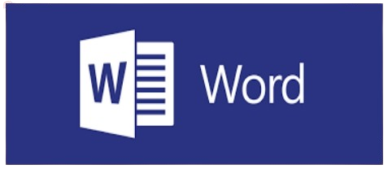
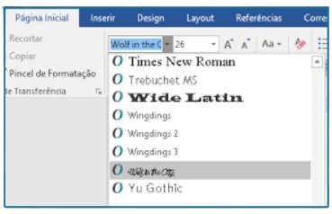

O Microsoft Word, frequentemente abreviado como MS Word, é um dos programas
de processamento de texto mais populares e amplamente utilizados do mundo.
Desenvolvido pela Microsoft, o Word faz parte do pacote de produtividade chamado
Microsoft Office, que inclui outros programas como Excel, PowerPoint e Outlook.
O Microsoft Word é uma poderosa ferramenta de processamento de texto que oferece uma
variedade de recursos e funcionalidades para atender às necessidades de criação, edição, formatação
e compartilhamento de documentos de texto em diversos contextos. Seu conjunto abrangente de recursos permite
aos usuários produzir uma ampla gama
de documentos profissionais, incluindo

relatórios, cartas comerciais, currículos,
artigos, trabalhos acadêmicos e muito
mais. Com sua interface intuitiva e
amigável, o Word torna o processo de
criação de documentos eficiente e acessível para usuários de todos os níveis de habilidade. Além
disso, sua extensa coleção de ferramentas de formatação permite que os usuários personalizem a
aparência e o layout de seus documentos de acordo com suas preferências e requisitos específicos.

A figura mostra como selecionar uma fonte no MS Word
Entre os recursos mais comuns do Microsoft Word
estão a formatação de texto, que permite ajustar a
fonte, o tamanho e o estilo do texto para melhorar a
legibilidade e a aparência visual do documento. Os
estilos oferecem uma maneira rápida e consistente de
aplicar formatação pré-definida a diferentes partes do
texto, garantindo uma aparência uniforme em todo o
documento.
As listas e tabelas facilitam a organização e apresentação de informações de
maneira clara e
concisa, enquanto os gráficos e imagens permitem a inclusão de elementos visuais para enriquecer o
conteúdo do documento. A revisão de texto oferece ferramentas poderosas para identificar e corrigir
erros gramaticais e de ortografia, garantindo a precisão e a qualidade do texto final.
Além disso, o Microsoft Word suporta a colaboração em tempo real, permitindo que
várias pessoas trabalhem
simultaneamente em um mesmo documento, facilitando a
comunicação e a colaboração em equipe. As opções avançadas de formatação de página permitem ajustar o layout
do documento, configurar margens, cabeçalhos e
rodapés, e muito mais. Em resumo, o Microsoft Word é uma ferramenta indispensável para qualquer pessoa que
precise criar documentos de texto com qualidade profissional. Com sua ampla gama de recursos e
funcionalidades, ele
oferece tudo o que os usuários precisam para produzir documentos impressionantes de forma eficiente e
eficaz.
Com sua interface intuitiva e recursos poderosos, o Microsoft Word é amplamente
utilizado em
ambientes empresariais, acadêmicos e domésticos, tornando-se uma ferramenta indispensável para a
produção de documentos de alta qualidade em todo o mundo.
Adicionando texto
Para adicionar texto, coloque o cursor onde você deseja e comece a
digitar.
Você pode formatar o texto conforme necessário usando as opções de
formatação disponíveis na barra de ferramentas ou na guia de opções de
formatação. Além disso, você pode aproveitar recursos como estilos de
texto,
listas numeradas ou com marcadores, e inserção de elementos adicionais,
como imagens, tabelas e gráficos, para criar documentos visualmente
atraentes e organizados. Explore as diversas funcionalidades do Word para
aprimorar sua produção de documentos de maneira eficiente e profissional.
A figura mostra o cursor, onde o texto será inserido